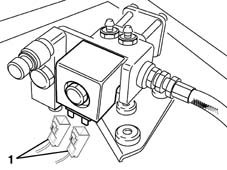

1044EA Check operation of coil for methane cut out solenoid valve on pressure reduction unit
- Path
- Test > 10 ENGINE UNIT > 1044 FUEL CIRCUIT PUMP/S AND DEVICES > 1044EA Check operation of coil for methane cut out solenoid valve on pressure reduction unit
- Kind
- test / check procedure
- Applies to
- engines: 1.6 16v; all production periods; only with equipment: BIPOWER
- Interactive page
- https://sloeber94.github.io/elrnDB-fMltpl/en/#/186003391
Applies to: engines: 1.6 16v; all production periods; only with equipment: BIPOWER
- Disconnect the electrical connection for the solenoid valve on the reduction unit and check that the coil winding resistance is between 6.4 and 9.6 Ohm at 20°C.
